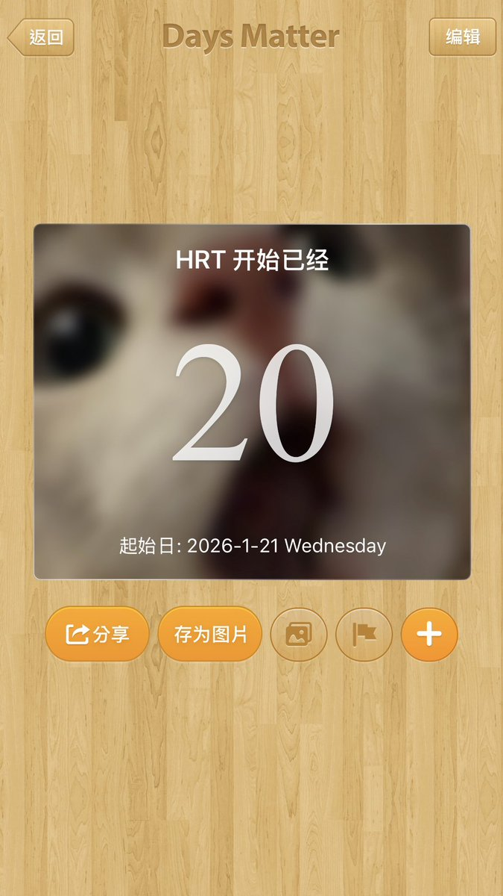

sophhh🍥
@sophhhsama
hrt开始快3周了
一切都过于平静 — 由于我还是深柜，每天就是上学自己卷学习，还有吃糖
感觉家里人还没发觉我好像有点不一样了
不过我还没想好如果他们发现了之后我要怎么解释（可能之后会留意到胸部发育等，可能我会穿binder遮一下吧）
希望不是暴风雨前的平静吧 ´• •`
至于吃糖这个决定其实已经被我反复考虑了很久才决定尝试的
在英国跨性别专科的转介已经等了一年多了，最乐观的也得至少多等1至2年。无证吃也是挺不得已的呢 o(´^｀)o
刚18岁就已经要为自己下定决心 也是需要一点勇气的吖 希望没什么大事发生吧
